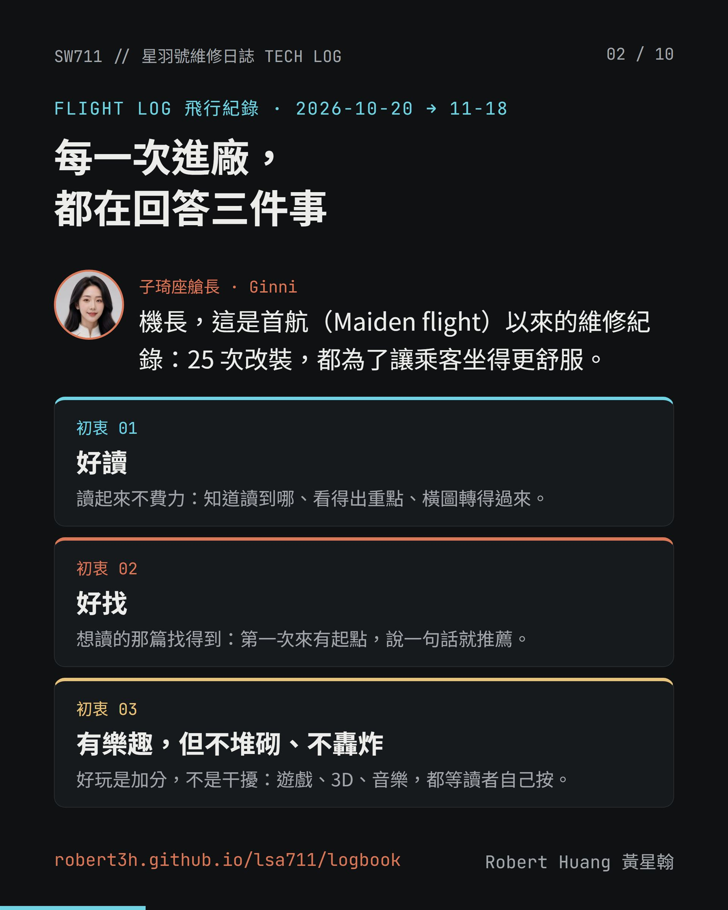
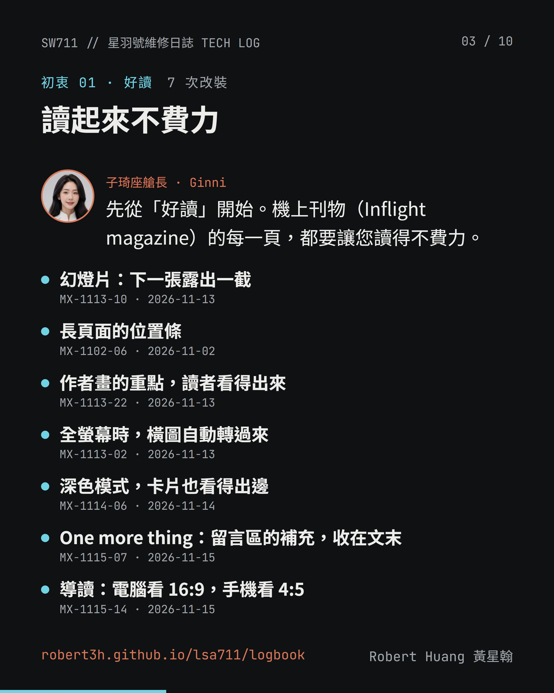
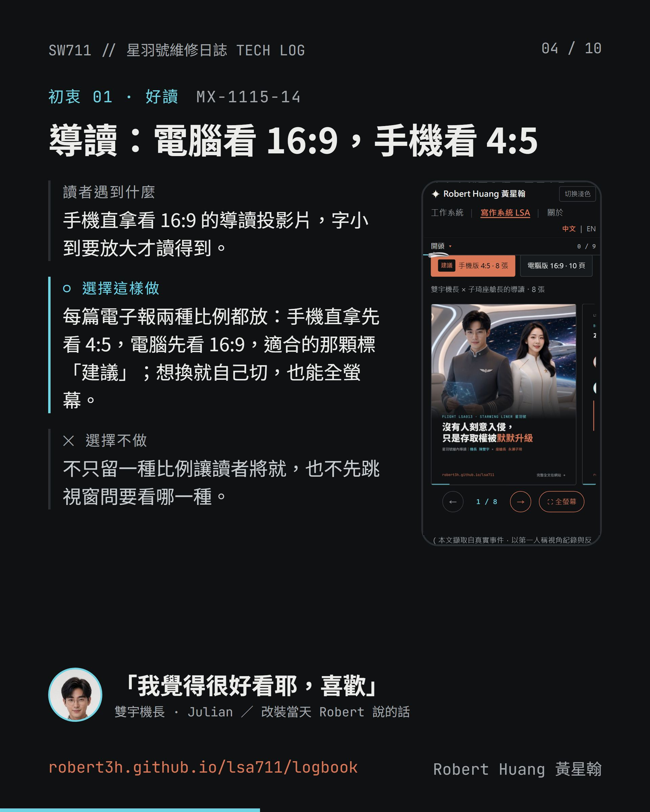
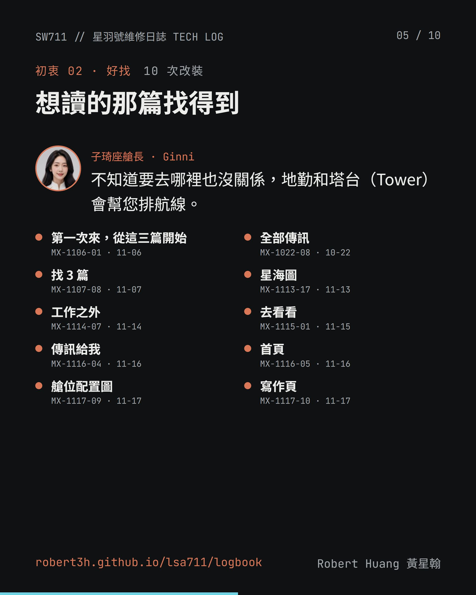
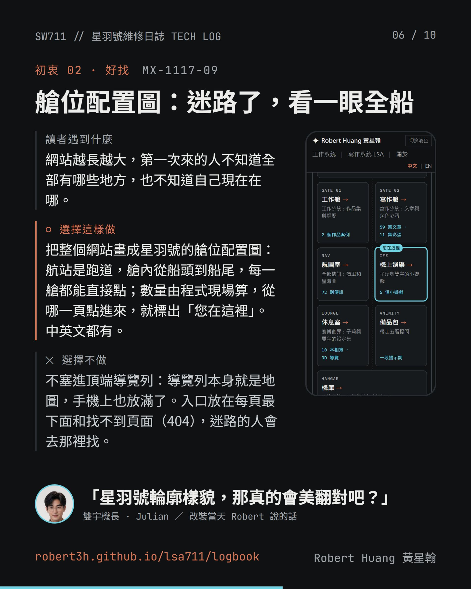
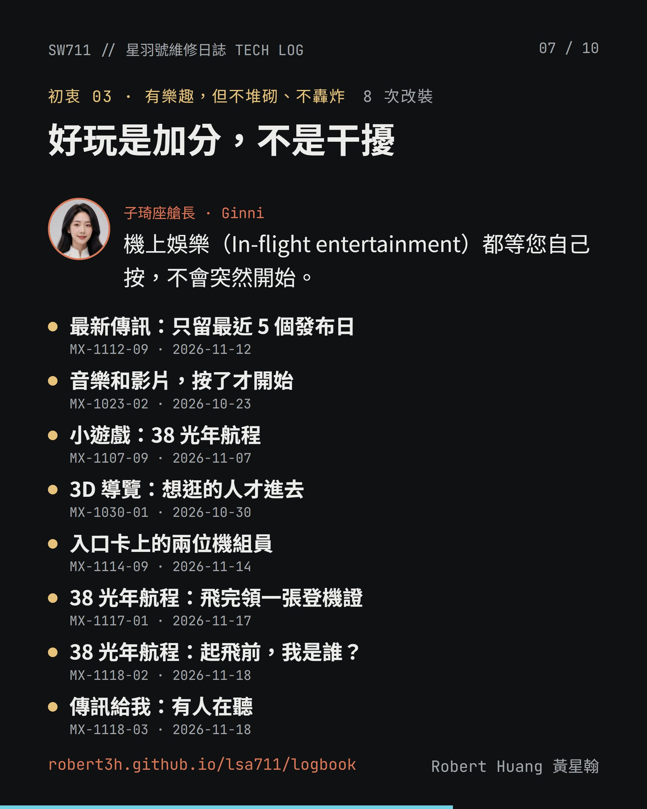
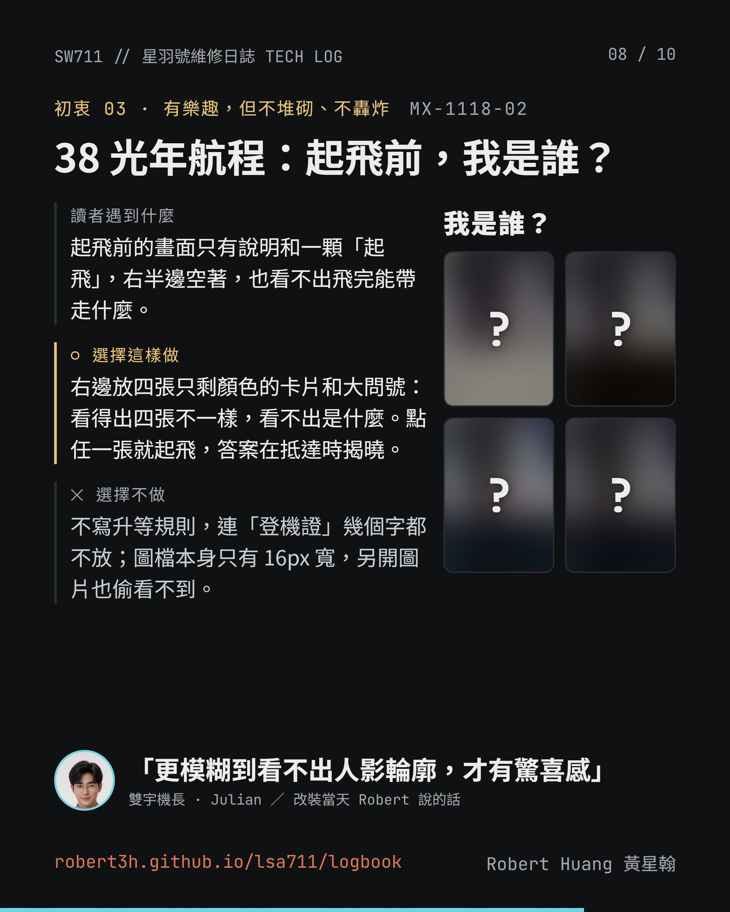
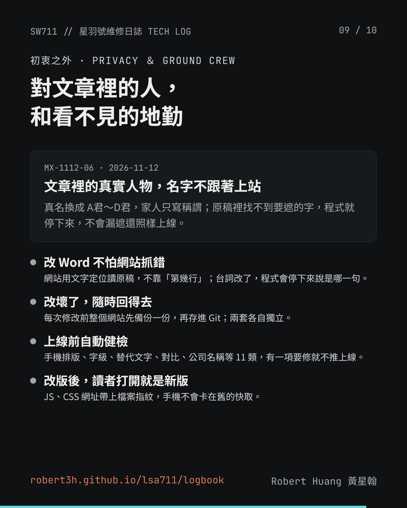
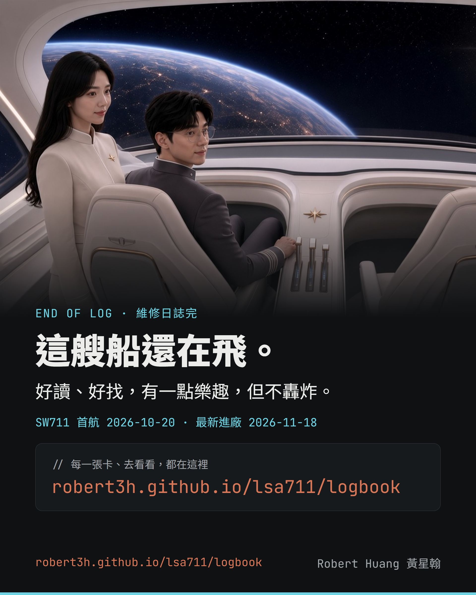

艙房A 生活隨筆 · 2026-11-18 07:00 UTC+8
換我當需求單位：把 AI 當 IT 部門，自己 Cosplay 最挑剔的使用者 🎭｜個人網站日誌










上班的時候，我幾乎都是被提需求的那一方：
「 Robert，這張報表可以多加幾個欄位嗎？」
「 這幾個項目的順序可以調整一下嗎？」
「 數字可以分成合併前／後，兩種版本嗎？」
「 這個有點急喔，下次開會前要弄好。」
……
最近我終於有機會Cosplay（角色扮演）一個位置：
打造個人網站的這一個多月以來，換我去當需求單位，AI 來當 IT部門。
我只略懂略懂VBA，不是前端工程師，程式碼從第一行 HTML 到最近不斷迭代改進的功能，全部都是Claude AI 寫的。
我負責的只有三件事：
提需求、驗收、退件。然後再跟迴圈一樣，持續反覆😹。
我的 IT 團隊：不用排隊，也不會嫌煩，但不會讀心
以前遇到排不到 IT 資源的時候，只有兩條路：寫 Email 發包請別人做，或自己DIY。
這次多了第三條路，而且這個 IT，有點像是《 阿拉丁 》（Aladdin）裡面的神燈精靈吉尼Genie（恰巧念起來跟我筆下的 Ginni 有點像 XD）：
- 不用排隊，半夜十二點提需求，它不囉唆馬上就開工。
- 不會嫌煩，同一個按鈕改第三次，它還是客客氣氣。
（OS：不知道有沒有被偷偷記上幾筆，未來再跟我清算總帳）。
但它有一件事做不到：讀心
我說「 讓讀者一點選，就前往那個功能 」，它很認真地把整張星海圖框了起來。
技術上正確，但讀者看了會黑人問號（一頭霧水）。
這時候我才發現，困難的應該不是「 能不能做到 」，而是弄清楚「 自己想表達什麼 」。
最難搞的使用者：一頁一頁親自驗收
既然程式不是我寫的，驗收就一定要自己「 親自指揮＋親自佈署 」。
每一次改版，我都會一張一張仔細看，因為想體驗讀者實際用起來是什麼感覺。
以「 用星海圖的效果來陳列所有文章 」那次為例，我退件時加上一句：
「 ㄟ～Claude，您這框框的範圍太奇怪了，直接讓這兩個按鈕分別亮一下（再熄滅）就好，讀者應該就知道要按什麼。」
類似的退件案例其實超級多：
- 幻燈片原本有一段「 手機可以左右滑 」的說明。後來改成讓下一張露出一截，讀者自然會往右滑，說明就可以刪掉了。
- 深色模式的卡片邊線太暗，看不出哪裡是一張卡，於是把框線對比度調高。
- 我在寫作平台留言區的補充，收進文章底部一個預設收起的「 One more thing＋」，本文才是主角，想多讀的人可以自行點開。
我在想的都不是技術問題，是「 讀者用起來順不順 」的問題。
退件單上，最常寫的是「 這個我選擇不做 」
我把每一次改版都記在網站的「 維修日誌 」裡，每張卡片有三段內容，依序遞進：
- 第一段：讀者（可能）遇到什麼
- 第二段：我選擇這樣做
- 第三段：我選擇不做什麼
第三段是我特別在意的，例如：
- 盡量不加上「 請往下捲 」這種容易讓人出戲的說明文字。
- 動態展示深淺色模式時，不默默改掉讀者自己選的顏色模式。
- 沒有徵得同意公開的真實人物名稱與留言，一律遮蔽名字或不上網站。
當需求單位最容易出現的情況，就是會一直疊加東西。
但每多一個按鈕、一段說明，看的人就多一分負擔。
我覺得比較友善的介面，是說明盡量減少的介面；需要寫說明，代表介面還有優化的空間（所以真的做不完T^T）。
角色互換之後，我體驗到的事
當過一個多月的需求單位，我回頭看自己上班時收到的需求，多了一些些同理心：
- 比較好的需求描述，應該是「 使用者會遇到什麼＋希望的調整方向 」，給予思考彈性，而不只是「 幫我加一個按鈕 」。
- 驗收不能只看「 有沒有做出來 」，要看「 實際用起來會不會卡卡 」。
- 被退件不是刻意刁難，是替使用者把關。
反過來，以後當我有需求要拜託 IT 大大的時候，也會自己先想清楚：
「 我要的到底是一個功能，還是能讓讀者少卡關一次？」
所以我說那個網站呢，到底該算誰做的？
AI能代勞的，是「 把需求變成程式碼 」的那一段，速度快到讓人招架不住，因為很快就可以啟動下一輪迭代修改。
但它還是沒有辦法做到：
- 知道讀者是誰、可能會在哪裡卡住
- 決定什麼該做、什麼不該做
- 為最後的結果負責
所以我不會說「 這個網站是我寫的 」，比較準確的說法是：
「 這個網站的每一個決定，都是我仔細想過與調整的。」
在檯面上覆蓋調侃自己的卡片，結束這回合
扮演了一個多月的需求單位，我終於理解，為什麼 IT 看到某些人的 Email 會先深呼吸。
因為一個按鈕的陳列方式，我可以來回退件好幾次。
如果你／妳好奇這個網站一路是怎麼被我退件出來的，維修日誌都在這裡。
也有投影片好讀版本，由我筆下的 Ginni 與 Julian 用機艙廣播風格方式來導讀：
🔗 https://robert3h.github.io/lsa711/logbook/
至於 AI 會不會覺得我很難搞，我猜它也有一本自己的維修日誌（記帳本），只是沒有公開給我而已，等到Skynet天網或是Matrix母體上線的那一天，可能會被拿出來決定要找誰算帳，或是讓誰去當生物電池（實際上效率差，還要吃、睡、休息😂）
讀完有什麼想說的？不用真名也可以。📡 傳訊給我 →